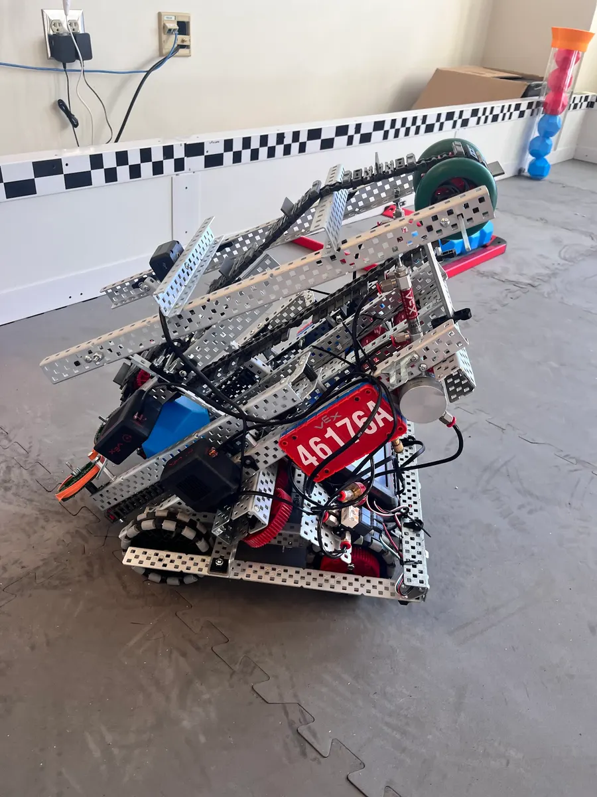

Drive train
Predictable movement starts with a dependable chassis. Our archive covers drivetrain ideas, motor helpers, and driver-control notes.
A closer look at the machines we build, the systems we test, and the ideas that make it onto the competition field.

A build shaped by our designers, programmers, and drivers. Explore the original photos and team records below.
Our design and test notes track the changes that make the robot more reliable.
Predictable movement starts with a dependable chassis. Our archive covers drivetrain ideas, motor helpers, and driver-control notes.
Compare mechanism ideas and record what needs to improve after field tests and match practice.
Programming checklists and test notes help turn an autonomous routine into repeatable performance.
Six original field photos. Select one to explore the full image.